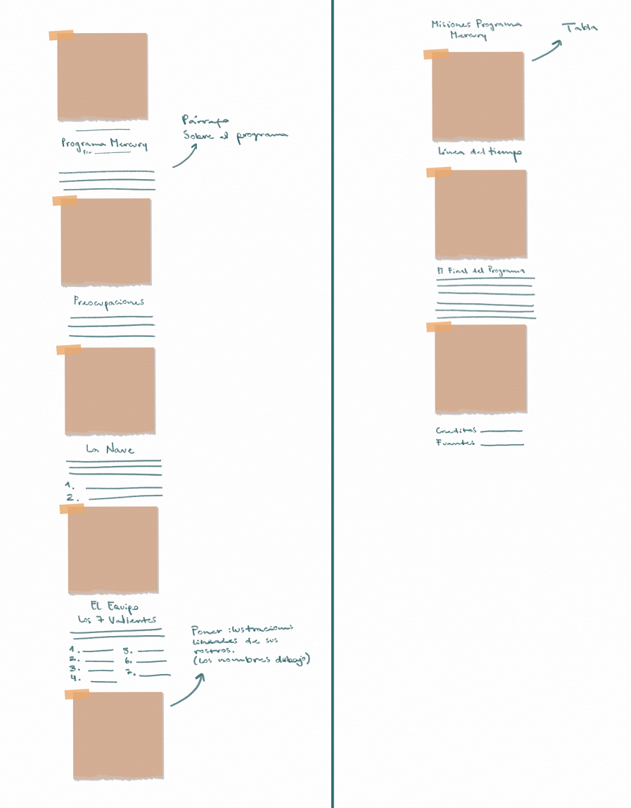
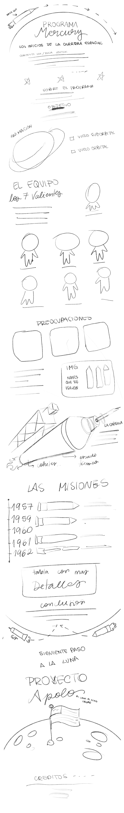

Storyboard grupal
Aquí presentamos nuestro storyboard grupal que nos ayudará a guiarnos en nuestro proceso para llegar a nuestro resultado final.

Bocetos individuales
A continuación, presentaremos los explorative sketches del grupo. Cada boceto es la interpretación de un integrante para el storyboard grupal.
Bocetos en duplas
Después de la presentación y la crítica grupal de los bocetos de cada integrante nos dividimos en duplas para fusionar y refinar nuestrosexplorative sketches.
Boceto final
Para finalizar, presentaremos un explanatory sketch: Donde cada pareja ha recibido un feedback y donde se han desarrollado las ideas con mayor profundidad. Entonces, el siguiente boceto corresponde a la unión de las ideas en una sola.
